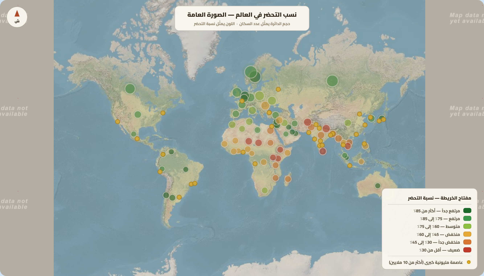
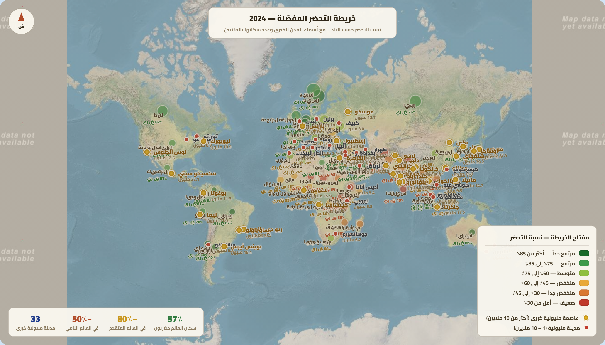

تمارين – الانفجار الحضري
- التحضر:
- تزايد المدن من حيث العدد والحجم والامتداد المجالي وكيفية استخدام الأرض ونمط العيش المميز. وهو ظاهرة عالمية انطلقت منذ منتصف القرن الثامن عشر مع الثورة الصناعية في أوروبا الغربية قبل أن تشمل كامل أنحاء العالم.
- نسبة التحضر:
- نسبة سكان المدن من مجموع السكان في منطقة ما وفي تاريخ محدد. ترتفع هذه النسبة في البلدان المتقدمة (أكثر من 75%، تصل إلى 98% في بلجيكا و92% في اليابان)، بينما تبقى دون 50% في عديد البلدان النامية (الهند 35%، إفريقيا جنوب الصحراء 42%).
- الانفجار الحضري:
- تسارع كبير لعدد سكان المدن، وهو ظاهرة تمسّ خاصة البلدان النامية التي تعرف تحضراً سريعاً دون نمو اقتصادي مماثل. وقد انتقل عدد سكان المدن في العالم من 724 مليون نسمة سنة 1950 إلى أكثر من 4.4 مليار سنة 2022، أي 57% من سكان العالم.
- النزوح الريفي:
- هجرة سكان الأرياف نحو المدن، ويُعدّ من أهم عوامل الانفجار الحضري في البلدان النامية. ويفسّره تزايد البطالة ومكننة الفلاحة وتدني مستوى العيش في الأرياف، مما يدفع السكان إلى البحث عن فرص عمل وظروف عيش أفضل في المدن.
| السنة | عدد سكان المدن (مليار نسمة) |
|---|---|
| 1950 | 0.724 |
| 2019 | 4.0 |
| 2022 | 4.4 |
| 2050 | 6.7 |
المصدر: معطيات الدرس حول الانفجار الحضري وتقديرات الأمم المتحدة


يتفاوت التحضر في العالم بين مناطق ذات تحضر مرتفع ومناطق ذات تحضر ضعيف. فمناطق التحضر المرتفع تشمل البلدان المتقدمة في أوروبا الغربية وأمريكا الشمالية وأستراليا واليابان حيث تتجاوز نسبة التحضر 75% (بلجيكا 98%، اليابان 92%، أستراليا 86%، الولايات المتحدة 83%)، بالإضافة إلى بلدان نامية ذات تحضر مرتفع (البرازيل 87%، الأرجنتين 92%). أما مناطق التحضر الضعيف فتشمل إفريقيا جنوب الصحراء (42%) وجنوب آسيا (40%) خاصة الهند (35%). ويُفسَّر هذا التفاوت بالعوامل الاقتصادية (النمو الاقتصادي والثورة الصناعية في العالم المتقدم) والعوامل التاريخية (قدم ظاهرة التحضر في أوروبا) والعوامل الديمغرافية والاجتماعية.
- مقدمة: تقديم الانفجار الحضري كظاهرة مميزة للبلدان النامية.
- تطوير: أولاً. الانعكاسات المجالية؛ ثانياً. الانعكاسات البيئية؛ ثالثاً. الانعكاسات الاجتماعية.
- خاتمة: ضرورة سياسات التهيئة الترابية والتنمية المستدامة.
مقدمة
يُعدّ الانفجار الحضري ظاهرة بنيوية في البلدان النامية، إذ انتقل عدد سكان المدن في العالم من 724 مليون نسمة سنة 1950 إلى أكثر من 4.4 مليار سنة 2022، ومن المتوقع أن يبلغ 6.7 مليار سنة 2050، مع تركز معظم النمو الحضري في البلدان النامية. وتترتب عن هذه الظاهرة انعكاسات متعددة مجاليه وبيئية واجتماعية.
تطوير
أولاً. الانعكاسات المجالية
مجالياً، أدى الانفجار الحضري في البلدان النامية إلى توسع المدن على حساب الأراضي الزراعية الخصبة، مما يطرح مشكلة الأمن الغذائي. كما توسعت المدن على الأطراف في شكل ضواحي غالباً ما تكون فوضوية البناء وقليلة التجهيزات الأساسية. ويتميز عديد هذه المدن بالمحافظة على نمط عيش أقرب إلى الريف منه إلى المدينة.
ثانياً. الانعكاسات البيئية
بيئياً، يتسبب التوسع السريع للمدن وتزايد أعداد الحضر في ارتفاع معدلات التلوث في التربة والمياه بسبب تزايد النفايات، وتلوث الهواء لكثرة المصانع والسيارات. ويُضاف إلى ذلك الضغط على الموارد الطبيعية والانبعاثات الكربونية التي تساهم في تغير المناخ.
ثالثاً. الانعكاسات الاجتماعية
اجتماعياً، يتزايد الطلب على الحاجيات الأساسية مثل الصحة والمواد الأساسية الغذائية والماء والكهرباء والسكن والتعليم، مما يضعف قدرة الدول على الاستجابة. كما يتفاقم البطالة بسبب عدم قدرة القطاع الصناعي والخدمي على استيعاب العدد الكبير من العاطلين، وتنتشر الأمراض الاجتماعية كالجريمة والسرقة والتسول وأطفال الشوارع، وترتفع أسعار العقارات والإيجارات مما يزيد من معاناة الفئات الاجتماعية الفقيرة.
خاتمة
هكذا يطرح الانفجار الحضري في البلدان النامية تحديات كبرى مجاليه وبيئية واجتماعية، مما يستوجب وضع سياسات تهيئة ترابية وتنمية مستدامة تحدّ من آثاره السلبية وتحقق التوازن بين النمو الحضري والتنمية الاقتصادية والاجتماعية.
الخط الزمني: 1950: بلوغ عدد سكان المدن 724 مليون نسمة ... 2019: تجاوز عدد سكان المدن 4 مليار نسمة ... 2022: تجاوز عدد سكان المدن 4.4 مليار نسمة ... 2050: التوقعات ببلوغ 6.7 مليار نسمة.